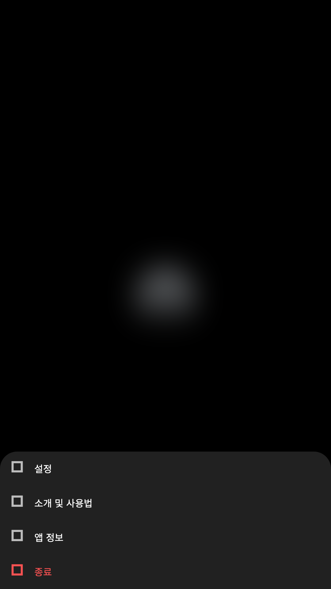
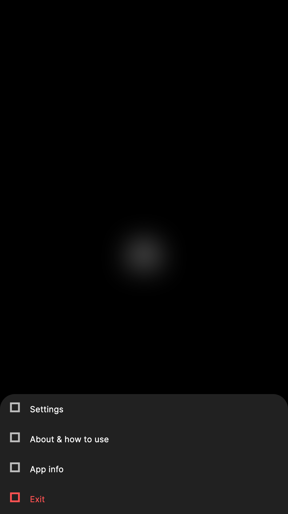
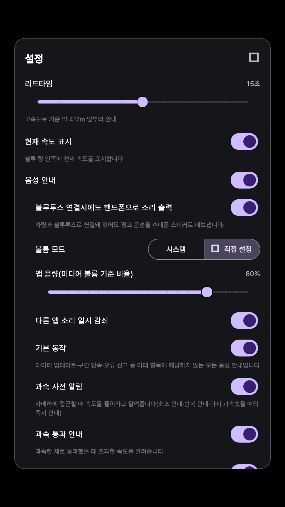
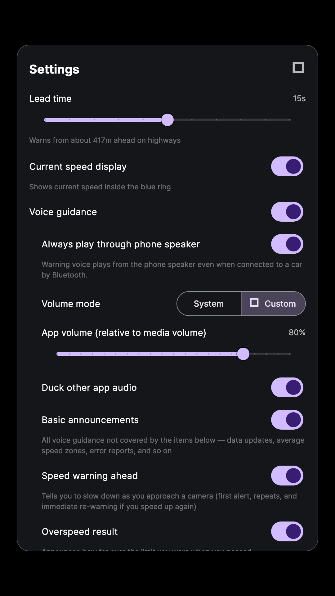
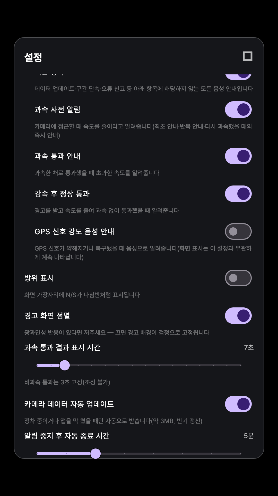
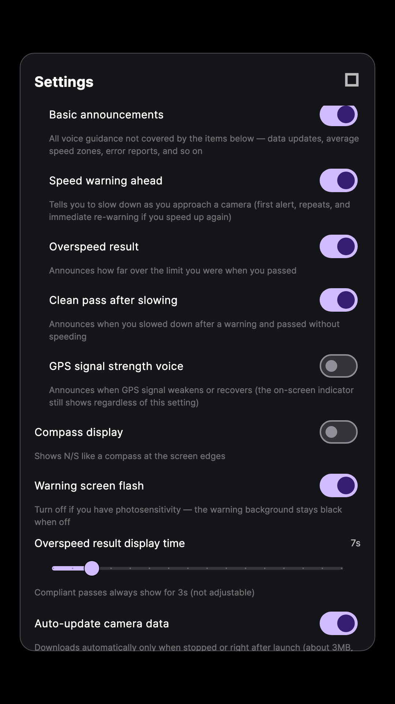

설정 방법
화면 중앙을 한 번 터치하면 메뉴가 열리고, 거기서 "설정"을 선택하면 아래 화면처럼 세부 항목을 조절할 수 있습니다. 아래 화면은 전부 실제 앱을 그대로 캡처한 것입니다.
1
1. 화면 중앙 터치하기
평상시 화면 중앙에는 은은하게 숨 쉬는 파란 원, 블루 링이 떠 있습니다. 이 부근을 한 번 터치하면 메뉴가 열립니다. 경고 표지가 점멸 중일 때는 안전을 위해 터치해도 메뉴가 열리지 않습니다.


2
2. 메뉴에서 "설정" 선택하기
터치하면 아래 네 가지 메뉴가 뜹니다.
3. "설정" 화면 살펴보기
위에서 아래 순서로 아래와 같은 항목들이 있습니다. 화면을 아래로 스크롤하면 더 많은 항목이 나옵니다.


-
리드타임카메라를 몇 초 전에 미리 알려줄지 정합니다(10~20초). 고속도로 기준으로는 그 초에 해당하는 거리 앞부터 안내가 시작됩니다.
-
현재 속도 표시블루 링 안쪽에 현재 속도를 표시합니다.
-
음성 안내아래 9개 세부 항목을 한 번에 켜고 끄는 상위 스위치입니다. 끄면 세부 항목은 회색으로 비활성화되지만 목록에서 사라지지는 않습니다.
-
블루투스 연결시에도 핸드폰으로 소리 출력차량과 블루투스로 연결돼 있어도 경고 음성을 휴대폰 스피커로 내보냅니다.
-
볼륨 모드시스템 볼륨을 그대로 따를지, 아래 슬라이더로 직접 정할지 선택합니다.
-
앱 음량(미디어 볼륨 기준 비율)볼륨 모드가 "직접 설정"일 때만 동작하는 슬라이더입니다(0~100%).
-
다른 앱 소리 일시 감쇠경고 음성이 나가는 동안 음악 등 다른 앱 소리를 잠시 줄입니다.


-
기본 동작데이터 업데이트·구간 단속·오류 신고 등, 아래 항목에 해당하지 않는 모든 음성 안내입니다.
-
과속 사전 알림카메라에 접근할 때 속도를 줄이라고 알려줍니다(최초 안내·반복 안내·다시 과속했을 때의 즉시 안내).
-
과속 통과 안내과속한 채로 통과했을 때 초과한 속도를 알려줍니다.
-
감속 후 정상 통과경고를 받고 속도를 줄여 과속 없이 통과했을 때 알려줍니다.
-
GPS 신호 강도 음성 안내GPS 신호가 약해지거나 복구됐을 때 음성으로 알려줍니다(화면 표시는 이 설정과 무관하게 계속 나타납니다).
-
방위 표시화면 가장자리에 N/S가 나침반처럼 표시됩니다.
-
경고 화면 점멸광과민성 반응이 있다면 꺼주세요 — 끄면 경고 배경이 검정으로 고정됩니다.
-
과속 통과 결과 표시 시간5~20초 사이에서 조절합니다. 비과속 통과 표시는 3초로 고정돼 있어 조정할 수 없습니다.
-
카메라 데이터 자동 업데이트정차 중이거나 앱을 막 켰을 때만 자동으로 받습니다(약 3MB, 반기 갱신).
-
알림 중지 후 자동 종료 시간3~10분 사이로 조절합니다. 앱이 백그라운드로 전환된 뒤 이 시간이 지나면 모든 기능을 정지합니다. 음성 안내를 꺼둔 경우에도 이 항목은 그대로 적용됩니다.